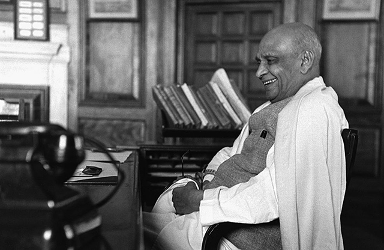
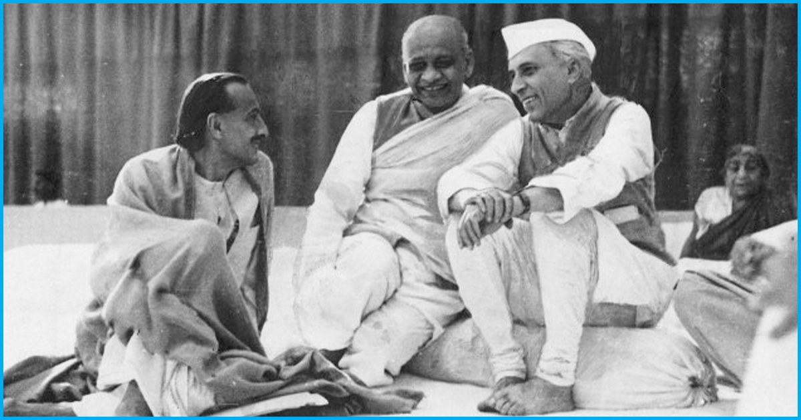
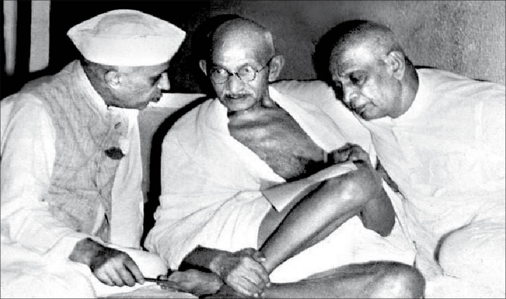

Sardar Vallabhbhai Patel
Iron Man of India




Sardar Patel Images
Timeline of his life :
- Exact date Unknown but as per matriculation examination papers, he was born on 31st October 1875 in Nadiad, Gujarat.
- Patel passed his matriculation at the relatively late age of 22.
- Patel spent years away from his family, studying on his own with books borrowed from other lawyers, passing his examinations within two years.
- 1893 - Sardar Patel was married to Jhaverben Patel.
- 1903 - The couple had a daughter, Maniben.
- 1905 - they had a son, Dahyabhai.
- 1909 - Patel's wife Jhaverba was hospitalised in Bombay (present-day Mumbai) to undergo major surgery for cancer. Her health suddenly worsened and, despite successful emergency surgery, she died in the hospital.
- At the age of 36, he journeyed to England and enrolled at the Middle Temple Inn in London. Completing a 36-month course in 30 months, Patel finished at the top of his class despite having had no previous college background.
- Returning to India, Patel settled in Ahmedabad and became one of the city's most successful barristers.
- 1917 - Patel delivered a speech in Borsad, encouraging Indians nationwide to sign Gandhi's petition demanding Swaraj self-rule from Britain. A month later, he met Gandhi for the first time at the Gujarat Political Conference in Godhra.
- 1920 - He was elected president of the newly formed Gujarat Pradesh Congress Committee; he would serve as its president until 1945.
- 1922,1924,1927 - Patel was elected Ahmedabad's municipal president.
- 1928 - Patel returned to the independence struggle from his municipal duties in Ahmedabad when Bardoli suffered from a serious double predicament of a famine and a steep tax hike.
- 1931 - Patel was elected president of Congress.
- 1940 - He was arrested annd imprisoned for nine months.
- During the transfer of power, Patel took charge of the departments of home affairs and information and broadcasting.
- He moved into a government house on Aurangzeb Road in Delhi, which would be his home until his death in 1950.
- 1947 - India became Independent.
- 1948 - Mahatma Gandhi was assassinated by Nathuram Godse.Following the assassination, many prominent leaders of the RSS were arrested, and the RSS as an organisation was banned on 4 February 1948 by the then Home Minister Patel.
- 1949 - Government of India lifted the ban on the RSS.
- 1949 - Authorities lost radio contact with a Royal Indian Air Force de Havilland Dove carrying Patel, his daughter Maniben, and the Maharaja of Patiala from Delhi to Jaipur.The pilot had been ordered to fly at a low altitude due to turbulence. During the flight, loss of power in an engine caused the pilot to make an emergency landing in a desert area in Rajasthan.[110] Owing to the aircraft's flying at a low altitude, the pilot was unable to send a distress call with the aircraft's VHF radio, nor could he use his HF equipment as the crew lacked a trained signaller. With all passengers safe, Patel and others tracked down a nearby village and local officials.
- summer of 1950 - Patel's health declined rapidly.He later began coughing blood.
- 15 December 1950 - Patel died after suffering a massive heart attack (his second).
- 2010 - Project for construction of The Statue of Unity in memory of Sardar Patel was announced.
- 31 October 2018 - It was inaugurated by the Prime Minister of India, Narendra Modi.
- It is the tallest statue in the world at 182 metres.